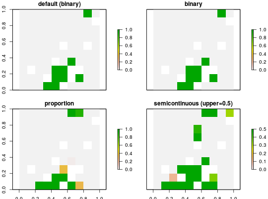

Add a semi-continuous decision to a conservation planning problem.
This is a relaxed decision where a part of a planning unit can be prioritized,
as opposed to the entire planning unit, which is the default function
(see add_binary_decisions).
This decision is similar to the add_proportion_decisions function
except that it has an upper bound parameter. By default, the decision can
range from prioritizing none (0 %) to all (100 %) of a planning unit.
However, a upperbound can be specified to ensure that at most only a fraction (eg. 80 %)
of a planning unit can be preserved. This type of decision may be useful
when it is not practical to conserve the entire planning unit.
add_semicontinuous_decisions(x, upper_limit)
| x |
|
|---|---|
| upper_limit |
|
Decision-class object.
Conservation planning problems involve making decisions on planning units.
These decisions are then associated with actions (eg. turning a planning
unit into a protected area). If no decision is explicitly added to a problem,
then the binary decision class will be used by default.Only a single decision
should be added to a
ConservationProblem object. If multiple decisions are added
to a problem object, then the last one to be added will be used.
decisions, add_binary_decisions,
add_proportion_decisions, constraints,
problem, targets, objectives
# create basic problem and using the default decision (binary) p <- problem(sim_pu_raster, sim_features) %>% add_min_set_objective() %>% add_relative_targets(0.1) # manually specify a binary decision type p2 <- p %>% add_binary_decisions() # specify a proportion decision type p3 <- p %>% add_proportion_decisions() # specify a semicontinuous decision type p4 <- p %>% add_semicontinuous_decisions(upper_limit=0.5) # solve problem s <- stack(solve(p), solve(p2), solve(p3), solve(p4))#> Optimize a model with 5 rows, 90 columns and 450 nonzeros #> Variable types: 0 continuous, 90 integer (90 binary) #> Coefficient statistics: #> Matrix range [2e-01, 9e-01] #> Objective range [2e+02, 2e+02] #> Bounds range [1e+00, 1e+00] #> RHS range [3e+00, 7e+00] #> Found heuristic solution: objective 2145.27 #> Presolve time: 0.00s #> Presolved: 5 rows, 90 columns, 450 nonzeros #> Variable types: 0 continuous, 90 integer (90 binary) #> Presolved: 5 rows, 90 columns, 450 nonzeros #> #> #> Root relaxation: objective 1.726522e+03, 11 iterations, 0.00 seconds #> #> Nodes | Current Node | Objective Bounds | Work #> Expl Unexpl | Obj Depth IntInf | Incumbent BestBd Gap | It/Node Time #> #> 0 0 1726.52215 0 4 2145.26789 1726.52215 19.5% - 0s #> H 0 0 1792.7738341 1726.52215 3.70% - 0s #> #> Explored 0 nodes (11 simplex iterations) in 0.00 seconds #> Thread count was 1 (of 4 available processors) #> #> Solution count 2: 1792.77 2145.27 #> Pool objective bound 1726.52 #> #> Optimal solution found (tolerance 1.00e-01) #> Best objective 1.792773834063e+03, best bound 1.726522151579e+03, gap 3.6955% #> Optimize a model with 5 rows, 90 columns and 450 nonzeros #> Variable types: 0 continuous, 90 integer (90 binary) #> Coefficient statistics: #> Matrix range [2e-01, 9e-01] #> Objective range [2e+02, 2e+02] #> Bounds range [1e+00, 1e+00] #> RHS range [3e+00, 7e+00] #> Found heuristic solution: objective 2145.27 #> Presolve time: 0.00s #> Presolved: 5 rows, 90 columns, 450 nonzeros #> Variable types: 0 continuous, 90 integer (90 binary) #> Presolved: 5 rows, 90 columns, 450 nonzeros #> #> #> Root relaxation: objective 1.726522e+03, 11 iterations, 0.00 seconds #> #> Nodes | Current Node | Objective Bounds | Work #> Expl Unexpl | Obj Depth IntInf | Incumbent BestBd Gap | It/Node Time #> #> 0 0 1726.52215 0 4 2145.26789 1726.52215 19.5% - 0s #> H 0 0 1792.7738341 1726.52215 3.70% - 0s #> #> Explored 0 nodes (11 simplex iterations) in 0.00 seconds #> Thread count was 1 (of 4 available processors) #> #> Solution count 2: 1792.77 2145.27 #> Pool objective bound 1726.52 #> #> Optimal solution found (tolerance 1.00e-01) #> Best objective 1.792773834063e+03, best bound 1.726522151579e+03, gap 3.6955% #> Optimize a model with 5 rows, 90 columns and 450 nonzeros #> Variable types: 0 continuous, 0 integer (0 binary) #> Semi-Variable types: 90 continuous, 0 integer #> Coefficient statistics: #> Matrix range [2e-01, 9e-01] #> Objective range [2e+02, 2e+02] #> Bounds range [1e+00, 1e+00] #> RHS range [3e+00, 7e+00] #> Found heuristic solution: objective 2145.27 #> Presolve time: 0.00s #> Presolved: 5 rows, 90 columns, 450 nonzeros #> Variable types: 90 continuous, 0 integer (0 binary) #> Presolved: 5 rows, 90 columns, 450 nonzeros #> #> #> Root relaxation: objective 1.726522e+03, 11 iterations, 0.00 seconds #> #> Nodes | Current Node | Objective Bounds | Work #> Expl Unexpl | Obj Depth IntInf | Incumbent BestBd Gap | It/Node Time #> #> * 0 0 0 1726.5221516 1726.52215 0.00% - 0s #> #> Explored 0 nodes (11 simplex iterations) in 0.00 seconds #> Thread count was 1 (of 4 available processors) #> #> Solution count 2: 1726.52 2145.27 #> Pool objective bound 1726.52 #> #> Optimal solution found (tolerance 1.00e-01) #> Best objective 1.726522151579e+03, best bound 1.726522151579e+03, gap 0.0000% #> Optimize a model with 5 rows, 90 columns and 450 nonzeros #> Variable types: 0 continuous, 0 integer (0 binary) #> Semi-Variable types: 90 continuous, 0 integer #> Coefficient statistics: #> Matrix range [2e-01, 9e-01] #> Objective range [2e+02, 2e+02] #> Bounds range [5e-01, 5e-01] #> RHS range [3e+00, 7e+00] #> Found heuristic solution: objective 9243.6 #> Presolve time: 0.00s #> Presolved: 5 rows, 90 columns, 450 nonzeros #> Variable types: 90 continuous, 0 integer (0 binary) #> Presolved: 5 rows, 90 columns, 450 nonzeros #> #> #> Root relaxation: objective 1.745174e+03, 17 iterations, 0.00 seconds #> #> Nodes | Current Node | Objective Bounds | Work #> Expl Unexpl | Obj Depth IntInf | Incumbent BestBd Gap | It/Node Time #> #> * 0 0 0 1745.1740638 1745.17406 0.00% - 0s #> #> Explored 0 nodes (17 simplex iterations) in 0.00 seconds #> Thread count was 1 (of 4 available processors) #> #> Solution count 2: 1745.17 9243.6 #> Pool objective bound 1745.17 #> #> Optimal solution found (tolerance 1.00e-01) #> Best objective 1.745174063848e+03, best bound 1.745174063848e+03, gap 0.0000%# plot solutions plot(s, main = c("default (binary)", "binary", "proportion", "semicontinuous (upper=0.5)"))